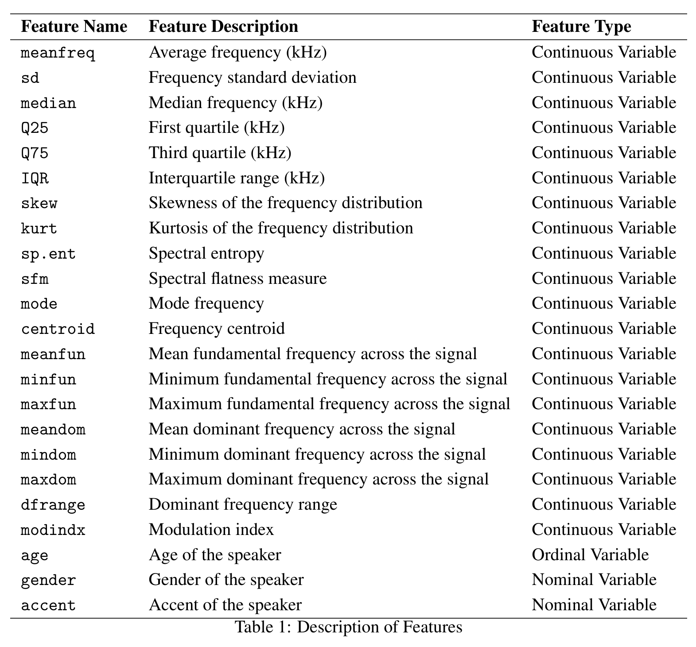

The DiffVoice dataset is a collection of voice recordings from different individuals. The dataset contains various features extracted from the voice signals, such as pitch, formants, and MFCCs. The dataset is designed to help researchers explore the differences in voices emitted by different individuals and develop models to distinguish between them.
The dataset is available on HuggingFace, while a CSV version can be downloaded here.
